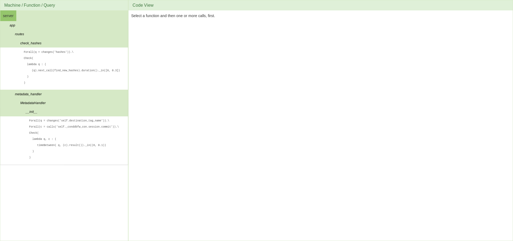
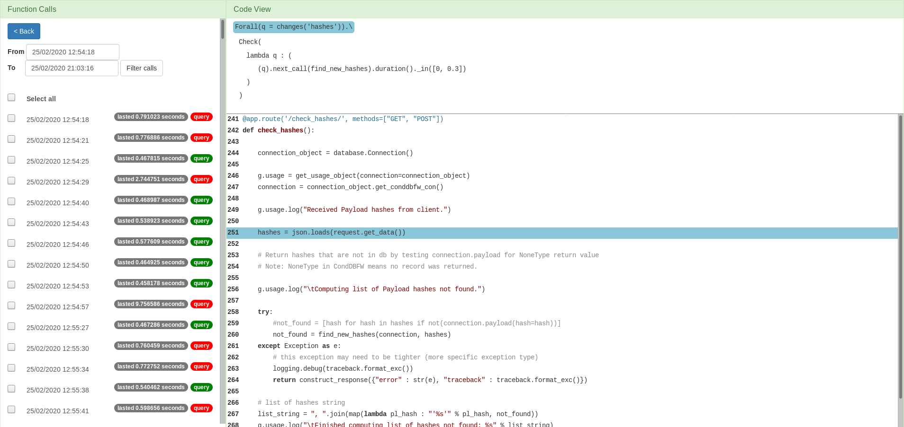

The outline of the web application should reflect the way VyPR gathered the displayed data. The whole process begins with the developer writing a query stating the desired behaviour of their software. Of course, the developer can write multiple queries over functions that are written in different files. Therefore, the first step for the app is to detect all the monitored functions and list them. The user’s first step is to select the function whose performance they want to analyse, and then the relevant query over that function. Given the selection of a function and property, the web tool lists the calls of the selected function for which there are results from monitoring the selected property.
The function calls are listed by the time at which they occurred. The duration of each function is also shown, along with a badge whose colour indicates whether there was a failure during that run with respect to the selected query. Failure is indicated by red, success is indicated by green. On the right of the interface, below the selected query, the tool displays the code of the selected function. Here, the lines that a quantifier refers to are highlighted as points of interest and paired with the corresponding quantifier.
